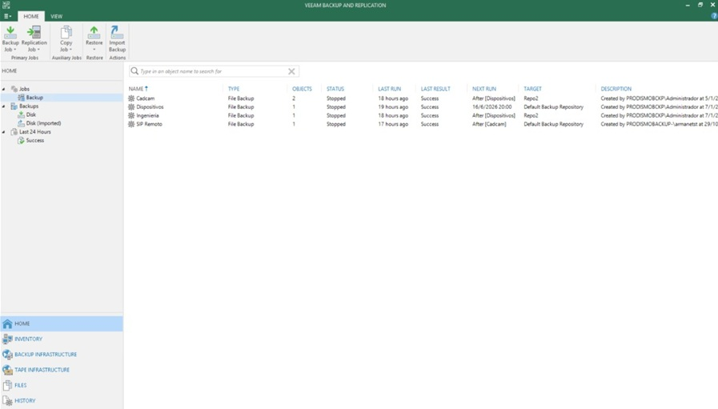

Procedimiento de Copias de Seguridad
Código: P529-IT-1
Última revisión: 24/11/2026
Rev. N°: 2
Cumple: TISAX (VDA ISA 5.2.9), ISO 27001:2022 (A.8.13)
1 OBJETIVO
Describir cómo se configuran, controlan, protegen, restauran y prueban las copias de seguridad de PRODISMO SRL según la MC529-IT-1. La recuperación de servicios completos ante una interrupción sigue el P528-IT-1.
2 RESPONSABLES
| Rol | Tareas |
|---|---|
| Administrador de IT (Emiliano Ferrari) |
|
| IT Manager / RSI (Germán Montalbetti) |
|
| Desarrollador SIP4.0 (Nicolás Donato) |
|
3 CONCEPTO DE RESPALDO Y RECUPERACIÓN
- Para cada servicio el F529-IT-2 indica datos, herramienta, frecuencia, retención, ubicación, protección, RPO/RTO, orden de recuperación y recursos.
- Toda alta, baja o cambio de un trabajo de copia (carpeta nueva, cambio de frecuencia o de retención) se registra como cambio en el F521-IT-2 y se actualiza el F529-IT-2. Ejemplo: el respaldo semanal de Comercial nació del ticket #1815 (06/2026).
4 EJECUCIÓN Y CONTROL
| Paso | Responsable | Registro |
|---|---|---|
| 1. Veeam (consola en la PC 192.168.0.243) ejecuta los trabajos programados: diarios para CadCam, Dispositivos y Matrices; semanal (sábados 20 h) para Comercial | Automático | Historial de Veeam |
| 2. Ante una falla o advertencia, Veeam envía un correo desde itprodismo@prodismo.com a Emiliano Ferrari y Germán Montalbetti (I529-IT-2) | Automático | Correo |
| 3. Revisar la causa (espacio en disco, archivo bloqueado, servidor apagado) y reintentar el trabajo el mismo día hábil; si la falla se repite o se perdió un punto de restauración, abrir ticket y avisar al RSI | Emiliano Ferrari | Ticket |
| 4. Controlar el espacio libre de los discos de copia (Comercial ≈ 4 TB por copia) y avisar al RSI si queda menos del 20 % | Emiliano Ferrari | Ticket |
| 5. SIP4.0: verificar los trabajos de Azure Backup y los copias gbak de Firebird (alertas de Azure, I529-IT-3) | Nicolás Donato | Azure Backup |
| 6. Revisión mensual: exportar el historial de Veeam y de Azure Backup del mes, con fallas y acciones (V-06) | Emiliano Ferrari; revisa Germán Montalbetti | F151-IT-5 (V-06) |
5 PROTECCIÓN DE LAS COPIAS
- Acceso a la consola de Veeam y a los discos de copia: solo Emiliano Ferrari y Germán Montalbetti. Usar una cuenta propia para Veeam y los repositorios, distinta de las cuentas del dominio (OBS-2026-18).
- Activar el cifrado de los trabajos de Veeam y guardar la contraseña en el inventario de claves F511-IT-4 (NC-2026-45).
- Respaldar la configuración de Veeam (Configuration Backup) en un disco distinto del de la PC (I529-IT-2, Parte D).
- Copia fuera de línea o fuera de la sala DC-1: según OM-2026-01 (2027).
6 RESTAURACIÓN A PEDIDO
| Qué hay que recuperar | Cómo se pide | Quién lo hace |
|---|---|---|
| Archivos o carpetas de los servidores (unidad Z: / \\diserver) | Ticket en TICKET A SOPORTE/COMPRAS indicando la ruta completa, el nombre y la fecha de la versión buscada | IT con Veeam (I529-IT-1) |
| Registros de SIP4.0 | Mensaje por Microsoft Teams a Nicolás Donato, con copia a IT | Nicolás Donato |
| Archivos de SharePoint u OneDrive | El usuario desde la papelera o el historial de versiones; si no puede, ticket | Usuario / IT |
| Correos borrados | El usuario desde Outlook (Recuperar elementos eliminados); si no puede, ticket | Usuario / IT |
- IT restaura con la opción Keep o en una ubicación alternativa para no sobrescribir la versión actual (I529-IT-1) y el usuario verifica que los datos están completos y abren.
- Al cerrar el ticket, IT escribe en la solución: fecha y hora, ruta, punto de restauración usado, resultado (OK / parcial / no recuperable y por qué) y tiempo que llevó. Ejemplo correcto: ticket #1822 (17/06/2026).
- IT carga la restauración en el F163-IT-1 (Ejercicios y pruebas) como prueba de restauración.
Video: recuperación de archivos y carpetas del servidor

7 PRUEBAS
| Prueba | Cómo se hace | Frecuencia | Registro |
|---|---|---|---|
| Muestra (V-07) | Restaurar con Veeam en ubicación alternativa una carpeta de cada trabajo (Ingeniería y Comercial) y comprobar que los archivos abren; restaurar una copia gbak de SIP4.0 en un entorno temporal aislado y borrarlo al terminar | Trimestral | F163-IT-1 |
| Recuperación completa (V-45) | Carpeta completa de un servidor y SIP4.0 completo en un entorno temporal aislado, midiendo el tiempo contra el RTO (P528-IT-1 §6) | Anual (primera en 2027) | F163-IT-1 · F163-IT-2 |
| Después de cambios | Restaurar una muestra del trabajo nuevo o modificado | Con cada cambio | F163-IT-1 · F521-IT-2 |
8 REGISTROS
| Registro | Retención |
|---|---|
| F529-IT-2 Concepto de Respaldo y Recuperación | Vigente y revisiones anteriores |
| Historial de Veeam y de Azure Backup (exportación mensual, V-06) | 2 años |
| Tickets de restauración (Planner Help Desk / lista de SharePoint) | 2 años |
| F163-IT-1 Ejercicios y pruebas | 3 años |
9 ANEXOS
Anexo A:
TICKET
Ticket a Soporte/Compras
[Pedido de restauración de archivos o carpetas]
Anexo B:
I529-IT-1
Instructivo de Restauración de Copias de Seguridad
[Restauración con Veeam]
Anexo C:
I529-IT-2
Instructivo de Alertas por Correo de Veeam
[Correo ante fallas y respaldo de la configuración]
Anexo D:
I529-IT-3
Instructivo de Respaldo de SIP4.0 en Azure
[Azure Backup semanal y copias gbak de Firebird]
Anexo E:
I529-IT-4
Instructivo de Retención en Microsoft 365
[Políticas de retención de correo, SharePoint, OneDrive y Teams]
Anexo F:
F529-IT-2
Concepto de Respaldo y Recuperación
[Copias por servicio y secuencia de recuperación]
10 REVISIONES DEL DOCUMENTO
| Rev. N° | Fecha | Descripción |
|---|---|---|
| 0 | 12/3/2026 | Primera emisión del documento |
| 1 | 9/6/2026 | Actualización del procedimiento Ticket a Soporte |
| 2 | 24/11/2026 | Concepto por servicio (F529-IT-2); control de Veeam con alertas por correo; protección; restauración a pedido por ticket con datos de cierre obligatorios; registros de SIP4.0 por Teams a Nicolás Donato (ya no a Enter Gestión); pruebas registradas en el F163-IT-1; instructivos I529-IT-2 a I529-IT-4. Se quitan la clasificación por BIA, las copias inmutables, el esquema GFS, la ubicación remota y Armanet/Enter Gestión como administradores de copias, que no correspondían. |